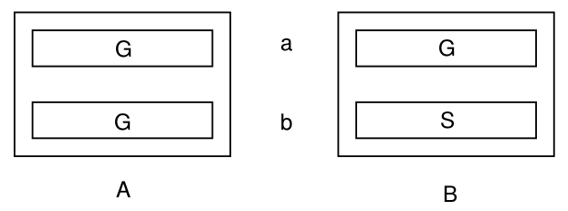

Aufgabe 3.7
Zwei völlig gleichartige Kästchen $A$ und $B$ besitzen je zwei Schubladen $a$ und $b$. $A$ enthält in jeder Schublade eine Goldmünze $G$, $B$ in einer eine Goldmünze, in der anderen eine Silbermünze $S$.

Man wählt nun zuerst blindlings ein Kästchen, öffnet dann zufällig eine Schublade und findet darin eine Goldmünze. Wie gross ist die Wahrscheinlichkeit, in der zweiten Schublade die Silbermünze zu finden?
- Die Information «Goldmünze gefunden» ist wichtig - sie verändert die Wahrscheinlichkeiten
- Listen Sie alle Wege auf, die zu «Goldmünze in der ersten Schublade» führen
- Nicht alle diese Wege sind gleichwahrscheinlich!
- Von welchen dieser Wege führt die zweite Schublade zur Silbermünze?
Eine weitere Variante des Paradoxons
Diese Aufgabe ist verwandt mit dem Ziegenproblem und zeigt erneut, wie Zusatzinformation unsere Wahrscheinlichkeiten beeinflusst.
Ausgangssituation visualisiert:
Die verlockende Falle:
Man könnte denken: «Ich habe eine Goldmünze gefunden, also bin ich entweder in Kästchen A oder in Kästchen B (Schublade b). Das sind zwei gleichwahrscheinliche Fälle, also 50% für Silbermünze.»
Das ist falsch!
Systematische Analyse (ohne bedingte Wahrscheinlichkeit):
Wir betrachten alle möglichen Abläufe mit ihren Wahrscheinlichkeiten:
| Kästchen | Schublade | Wahrsch. | 1. Fund | 2. Schublade |
| A | a | $\frac{1}{4}$ | G $\checkmark$ | G |
| A | b | $\frac{1}{4}$ | G $\checkmark$ | G |
| B | a | $\frac{1}{4}$ | S | - |
| B | b | $\frac{1}{4}$ | G $\checkmark$ | S |
Nur die mit $\checkmark$ markierten Fälle sind mit unserer Beobachtung «Goldmünze gefunden» vereinbar.
Lösung durch systematisches Abzählen:
Von den vier gleichwahrscheinlichen Elementarereignissen führen genau drei zum Ereignis «Goldmünze in der ersten Schublade»:
- Kästchen A, Schublade a geöffnet $\rightarrow$ zweite Schublade enthält G
- Kästchen A, Schublade b geöffnet $\rightarrow$ zweite Schublade enthält G
- Kästchen B, Schublade b geöffnet $\rightarrow$ zweite Schublade enthält S
Von diesen drei gleichwahrscheinlichen Möglichkeiten führt nur eine zur Silbermünze in der zweiten Schublade.
$$P(\text{Silbermünze in 2. Schublade} \mid \text{Goldmünze gefunden}) = \frac{1}{3}$$
Alternative Betrachtung mit Baumdiagramm:
Intuitive Erklärung:
Die Goldmünze kann aus drei Quellen stammen:
- 2 Schubladen aus Kästchen A (beide mit Gold)
- 1 Schublade aus Kästchen B (nur Schublade b mit Gold)
Da Kästchen A zwei «Chancen» hat, eine Goldmünze zu liefern, während B nur eine hat, ist es wahrscheinlicher (im Verhältnis 2:1), dass wir uns bei Kästchen A befinden. Deshalb ist die Wahrscheinlichkeit für die Silbermünze nur $\frac{1}{3}$ und nicht $\frac{1}{2}$.
Vergleich mit dem Ziegenproblem:
Beide Probleme zeigen:
- Zusatzinformation verändert Wahrscheinlichkeiten
- Die intuitive 50:50-Annahme ist oft falsch
- Systematisches Durchdenken aller Möglichkeiten führt zur richtigen Lösung
- Man muss genau prüfen, welche Elementarereignisse noch möglich sind
Die Wahrscheinlichkeit $\frac{1}{3}$ für die Silbermünze zeigt erneut, wie unsere Intuition in der Wahrscheinlichkeitsrechnung täuschen kann!